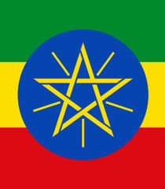
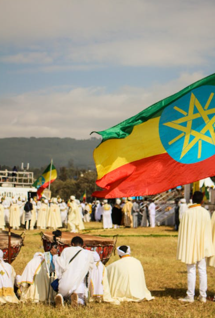

Adis Ababa
5,956,680 Resident
Ethiopia
9.0192° N, 38.7525° E
Get More Information

Adis Ababa
View all citiesAddis Ababa, sometimes spelled Addis Abeba, is the capital of Ethiopia. It is the largest city in Ethiopia, with a population of 3,384,569 and an annual population growth rate of 3.8% according to the 2007 population census.
Images Credit
Bandung
Asia Africa
City Network
Quick Link
Get in touch
Need Information?
+62 81318667479
bapperida@bandung.go.id
© BAACN - All rights reserved